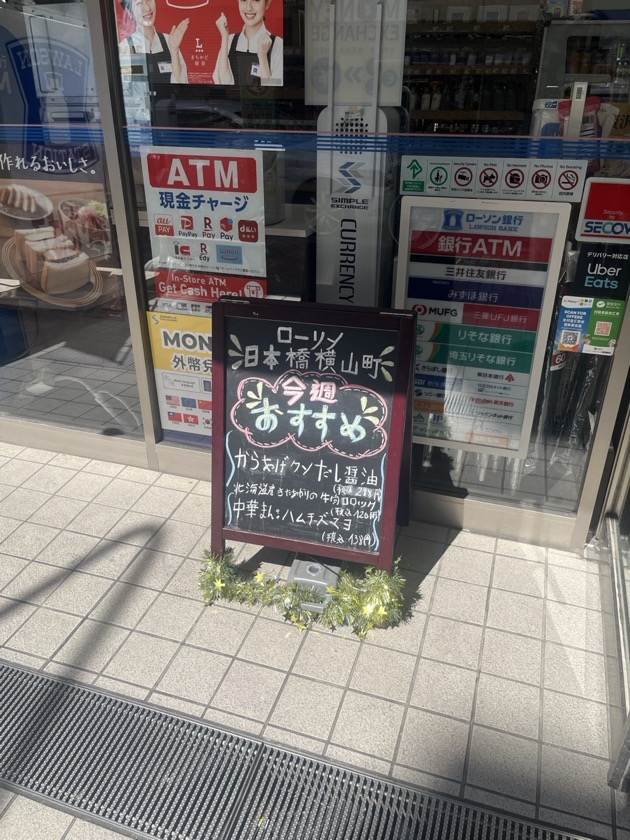

秋の長雨に中指を立てていたところ、本日は存外からっとした晴れの日となって足取りも軽やかである。大抵の人間はGene KellyのようにSinging in the rain♪ する素養を持ち合わせていないのであるからして、部屋干しをする悲しさと面倒臭さに苛まれるのが常である。クソめ。
＊ ＊ ＊

クソといえば、そう、海外からやってきたパートタイマーたちが書いたと思わしきコンビニの店頭ポップのことである。クソクソと申し訳ないのだけれど、実にヘタクソの筆致であった。これを「からあげクソ」と読んだ自分の目に狂いは無いなと思っている。それゆえに最高である。真面目にやってズレているものや真剣な勘違いほど見ていて面白いものはないし、これにこそ最も妙味があり、至上のお笑いでもある。
ところで、このポップの（特に文字面の）何がいまひとつかといえば、それは筆の流れや行間の乏しさというか、つまり部分が部分として独立し過ぎていることが原因していそうであり、まるで定規をもって図形を引くかのような線をしている。母国の文字でないのだから当たり前のことだ。
僕らが初めて文字を習ったときのことを思い出してみるに、当時はやはり文字を文字としてでなく、ある一定の規則を伴った図形のように捉えていたような気もする。たとえば四角や三角にはトメ・ハネ・ハライにあるような繋がりのための所作というものがなく、あくまでも個別の線の集まったものして認められている気がするし、したがって文字を書く上でも決められた線以外の箇所には一切合切何も書いてやらないぞという情熱に溢れていた感覚がある。
そうした感覚から始まり、文字を書き始めて数年、数十年が経ったところで、ようやく手流れの美しさを自然に習得し(あるいは文字を書くのに楽チンな手癖手遊びを体得していくにしたがって)、行間、あるいは無為の筆致が現れるものと心得る。そう考えると文字の文字らしさというのは常に流れの中に成立していと考えるのがいいかも知れない。
というより、文字以外にも色々なものがそうである。川端康成の文体、上岡龍太郎のお喋り、宇多田ヒカルの歌声、MJのダンスパフォーマンス、卑近な例で言えば近所の花屋の剪定の仕方や交通整備のおじさんの赤色灯の振り具合であったり、町場のバーのカクテルメイク一つとっても、やっぱりほとんどがそうである。部分の洗練とそれらの自然な接続によって、全てまとまった一つの巨大な生き物のように仕立て上げていくということが、物事の上達には欠かせない。
あれこれと考えていて気づいたのだけれど、第一に海外からやってきた彼らは日本文字の正しい書き順を多分知らない。殊に「ン」について言えば、二画目は下から上に引っ張り上げるのが手順であるけれども、ポップを見れば上から下に流したような感じがしなくもない。上部の「ローソン」の「ン」を見ても同様である。
＊ ＊ ＊
走ってるチャリの速度を上げたくて地面を直に足で蹴るみたいに、いくら真剣にやったところで裏目に出ることがある。世の中にはそういう類のユーモアが隠れて機能していて、暮らしのスピードを適切に調整してくれているのだ。NICEだ。